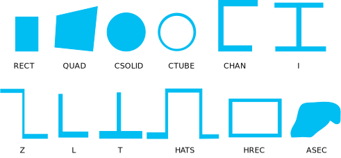

SECTYPE, SECID, Type, Subtype, Name, REFINEKEY
Associates section type information with a section ID
number.
SECIDSection identification number. If
SECIDis blank or zero, theSECIDnumber is incremented by one from the highest section ID number currently defined in the database. (See Notes forSECIDinput specific to general contact.)TypeBEAM
—
Defines a beam section.
TAPER
—
Defines a tapered beam or pipe section. The sections at the end points must be topologically identical.
GENB
—
Defines a nonlinear general (temperature-dependent) beam section.
COMB
—
Defines a composite (temperature-dependent) beam section.
PIPE
—
Defines a pipe section.
LINK
—
Defines a link section.
AXIS
—
Define the axis for a general axisymmetric section.
SHELL
—
Defines a shell section.
GENS
—
Defines a preintegrated general (temperature-dependent) shell section.
PRETENSION
—
Defines a pretension section.
JOINT
—
Defines a joint section.
REINF
—
Defines a reinforcing section.
CONTACT
—
Defines a contact section.
SubtypeWhen
Type= BEAM, the possible beam sections that can be defined forSubtypeare:RECT Rectangle QUAD Quadrilateral CSOLID Circular solid CTUBE Circular tube CHAN Channel I I-shaped section Z Z-shaped section L L-shaped section T T-shaped section HATS Hat-shaped section HREC Hollow rectangle or box ASEC Arbitrary section -- integrated cross-section inertia properties supplied by user MESH User-defined mesh -- see the SECREAD command for more information about this data The following figure shows the shape of each cross section subtype:

When
Type= GENB, the possible nonlinear general beam sections that can be defined forSubtypeare:ELASTIC The generalized-stress/generalized-strain relationship is elastic (linear or nonlinear). PLASTIC The generalized-stress/generalized-strain relationship is elasto-plastic (and allows for permanent deformation). When
Type= COMB, the only possible composite-beam section that can be defined forSubtypeis:MATRIX Matrix. When
Type= JOINT, the possible joint sections that can be defined forSubtypeare:UNIV Universal joint REVO Revolute joint SLOT 3-D Slot joint PINP Point-in-plane joint PRIS Translational joint CYLI Cylindrical joint PLAN Planar joint WELD Weld joint ORIE Orient joint SPHE Spherical joint GENE General joint SCRE Screw joint When
Type= REINF, the possible reinforcing sections that can be defined forSubtypeare:DISC Discrete reinforcing. The reinforcing fibers are arbitrarily oriented and modeled individually. SMEAR Smeared reinforcing. The reinforcing fibers are homogeneous and defined as a membrane. When
Type= CONTACT, the possible contact sections that can be defined forSubtypeare:CIRCLE Geometry correction for a portion of a circle (or nearly a circle). SPHERE Geometry correction for a portion of a spherical (or nearly spherical) surface. CYLINDER Geometry correction for a portion of a revolute (or nearly revolute) surface. NORMAL Geometry correction to specify a user-defined contact surface normal. BOLT Geometry correction for a bolt thread surface. RADIUS Equivalent beam/edge radius for 3-D beam-to-beam or 3-D edge-to-edge contact in a general contact definition; or radii associated with rigid target segments in a general contact definition. NameAn eight-character name for the section.
Namecan be a string such as "W36X210" or "HP13X73" for beam sections. Section name can consist of letters and numbers, but cannot contain punctuation, special characters, or spaces.REFINEKEYSets mesh refinement level for thin-walled beam sections. Valid values are 0 (the default - no mesh refinement) through 5 (high level of mesh refinement). This value has meaning only when
Type= BEAM.
Notes
SECTYPE sets the section ID number, section type, and subtype for a section. A previously-defined section with the same identification number will be redefined. The geometry data describing this section type is defined by a subsequent SECDATA command. Define the offsets (if applicable) by a subsequent SECOFFSET command. The SLIST command lists the section properties, and the SECPLOT command displays the section to scale. The SECNUM command assigns the section ID number to any subsequently-defined elements.
When defining a section for contact elements
(Type = CONTACT) that are used in a general contact definition, a
section number representing a general contact surface can be specified. Alternatively,
you may define a subset of a region by inputting a valid label for
SECID (ALL_EDGE, ALL_FACE, ALL_VERT, ALL_TOP,or ALL_BOT),
or by inputting a node component name with or without a component name extension (_EDGE,
_FACE, _VERT, _TOP, or _BOT). For more information, see Applying Surface Geometry Correction in the Contact Technology Guide.
Beam Section Considerations
For a beam section (Type = BEAM),
a subsequent SECDATA command builds a numeric model
using a nine-node cell for determining the properties (Ixx, Iyy, etc.) of the section
and for the solution to the Poisson's equation for torsional behavior.
See Beam Analysis
and Cross Sections in the Structural Analysis Guide for examples using the
section commands.
For a nonlinear
general beam section (Type = GENB),
the Subtype and REFINEKEY options do not apply. Subsequent commands are necessary to define
the section: BSAX, BSM1, BSM2, BSTQ, BSS1, BSS2, BSMD, and BSTE are available. All other section commands are ignored for this section
type.
For a preintegrated composite-beam section (Type = COMB), the REFINEKEY options do not
apply. Subsequent commands are necessary to define the section: CBTMP, CBMX, CBMD, and CBTE are available. All other section commands
are ignored for this section type.
Tapered Section Considerations
For a tapered
beam or pipe section (Type = TAPER),
two subsequent SECDATA commands are required (one
for each end section). Section ends must be topologically identical
(same Subtype, number of cells and material
IDs). For a tapered pipe section, end sections must have the same
number of cells around the circumference and along the pipe wall,
and the same shell section ID for a composite pipe wall.
Shell Section Considerations
For a preintegrated
general shell section (Type = GENS),
the Subtype and REFINEKEY options do not apply. Subsequent commands are necessary to define
the section: SSPA, SSPB, SSPD, SSPE, SSMT, SSBT, and SSPM are available. All other
section commands are ignored for this section type.
Pretension Section Considerations
The PRETENSION section options of the SECTYPE and SECDATA commands are documented primarily to aid your understanding of the data written by the CDWRITE command. ANSYS, Inc. recommends that you generate pretension sections via the PSMESH command.
Reinforcing Section Considerations
For a reinforcing section (Type = REINF), each
subsequent SECDATA command defines the material, geometry, and
orientation of one discrete reinforcing fiber (Subtype =
DISC) or one smeared reinforcing surface (Subtype =
SMEAR). When referenced by a MESH200 element, only one
SECDATA command is valid.
Displaying Elements with Section Definition
To display elements with shapes determined from the section definition, issue the /ESHAPE command.